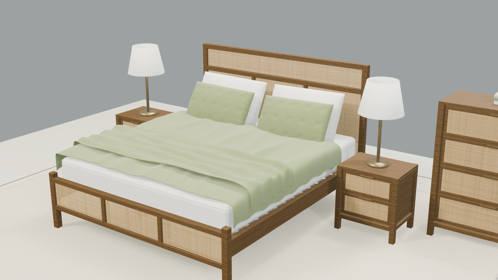
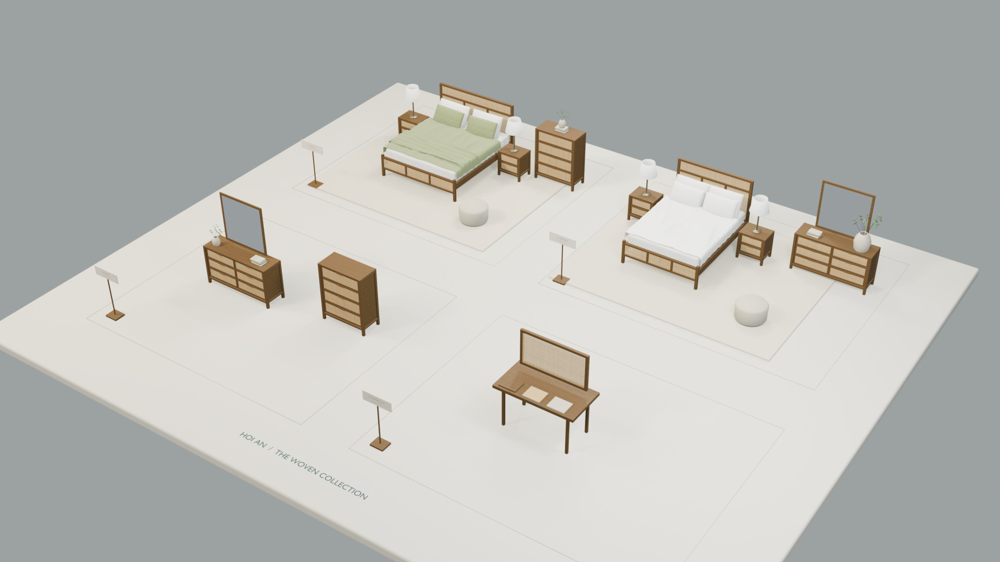

HOI AN / THE 2026 COLLECTION
A quieter
kind of luxury.
Warm timber. Natural rattan.
Space to appreciate every detail.
CRAFT, GIVEN ROOM TO BREATHE
Open by design.
Woven by nature.
Golden Syrup timber frames an intricate rhythm of natural rattan. Two bedroom displays, a storage gallery, and a hands-on material study bring the entire HOI AN catalogue together in one light-filled exhibition. No walls. No partitions. Nothing between you and the details.
A visual 3D reconstruction from the supplied NEW HOI AN Catalogue 2026. Six catalogue products; exhibition styling and concealed construction are interpreted, not manufacturer CAD.
FIND YOUR OWN POINT OF VIEW
The open exhibition.
Walk through the collection. Orbit each piece.
Open the drawers. Look closer at the weave.

A closer
connection.
The 30 MB exhibition loads only when opened
Choose a zone to go straight to its display. Overview shows the entire exhibition: drag to rotate, pinch to zoom, or use + and −.
In Walk mode, drag the joystick with your left thumb to move. Swipe the view with your other thumb to look around. On a keyboard, use W A S D or the arrow keys.
Tap a piece for details below the view. Select Inspect in 3D for the full-detail model, then Open drawers to see inside. Expand the viewer for more space; use × to return.
The tour starts in Overview. Select a zone to walk. Exhibition meshes are optimised; Inspect in 3D loads the full-detail product. Web lighting is real-time; the images below are original Blender renders.
SIX PIECES. A SHARED LANGUAGE.
The Hoi An edit.
Catalogue dimensions. Reconstructed in 3D.
A complete bedroom collection.
Product photographs are original catalogue references, not renders. Select any piece to inspect its reconstructed 3D model.
No matching products. Try another name or SKU.
GOLDEN HOUR, EVERY ANGLE
Room to imagine.
Four original Blender EEVEE renders.
UHD 4K · 3840 × 2160.
 THE SIGNATURE / TRUE OPEN WEAVE
THE SIGNATURE / TRUE OPEN WEAVEAN HONEST EXPRESSION OF MATERIAL
Texture you can
almost touch.
Not a weave printed onto a flat surface. Individual rattan reeds pass over and under one another, leaving real openings for light and shadow. Bevelled timber, inset frames, and wooden pulls complete a quiet, tactile language.
- 01 / GOLDEN TIMBER
- Oak veneer / pine / mountain ash timber
LCM127 Golden Syrup finish interpretation - 02 / NATURAL RATTAN
- Three-dimensional basket weave
Real gaps, alternating reeds, recessed panels - 03 / SOFT LAYERS
- Olive quilting & white cotton
Modelled folds, tufted cushions, sewn edges
FROM AN IDEA TO YOUR NEXT PROJECT
Like what
you see?
Request the Blender scene, individual 3D models, original 4K renders, or the complete website. Talk to Muhammad Rizky on WhatsApp about this collection or a project of your own.
Requests open a WhatsApp draft. No message is sent automatically. The exhibition is freely viewable; public website assets are not access-controlled.